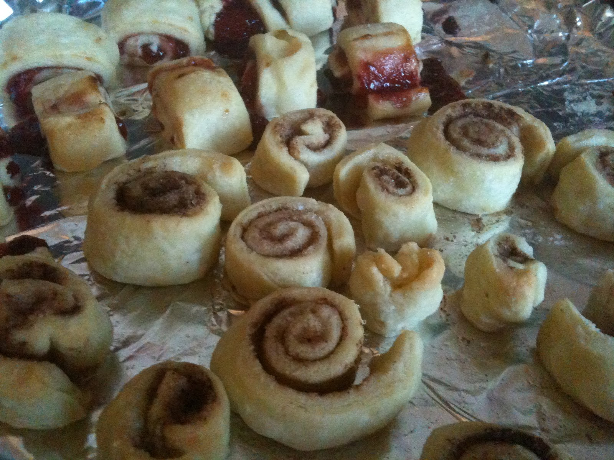

Doodads
Doodads are a buttery, sugary desert that is made using the leftover
crust when baking a pie. It is very quick and easy to make and, most
importantly, it is delicious!
ETA
Prep: 5 minutes
Cook: 15 minutes
Total: 20 minutes
Ingredients
- Pie crust
- Melted butter
- Sugar
- Cinnamon
Instructions
- Preheat the oven to 450°F.
- Roll the pie dough thin.
- Put the melted butter, sugar, and cinnamon generously on the rolled pie dough.
- Cut the dough into 1 inch wide strands.
- Roll the strands of dough into a ball. (This should look like a small cinnamon bun.)
- Put the balls on a greased pan and bake for 15 minutes, or until the dough is flakey and starting to turn golden-brown.
- Let it cool properly before eating!